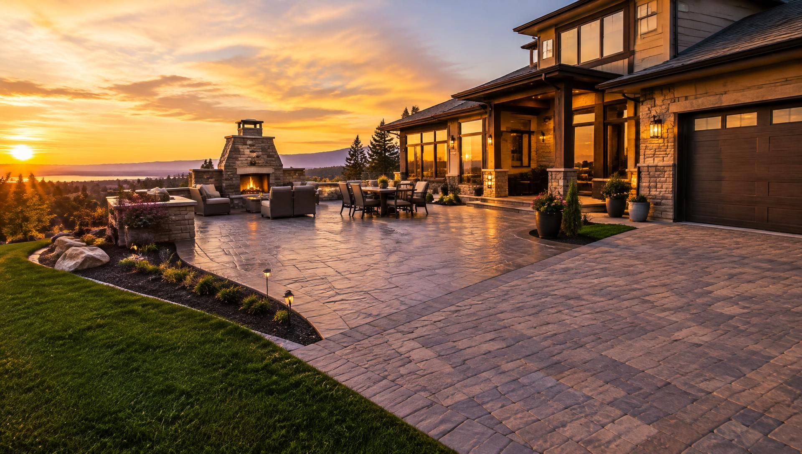
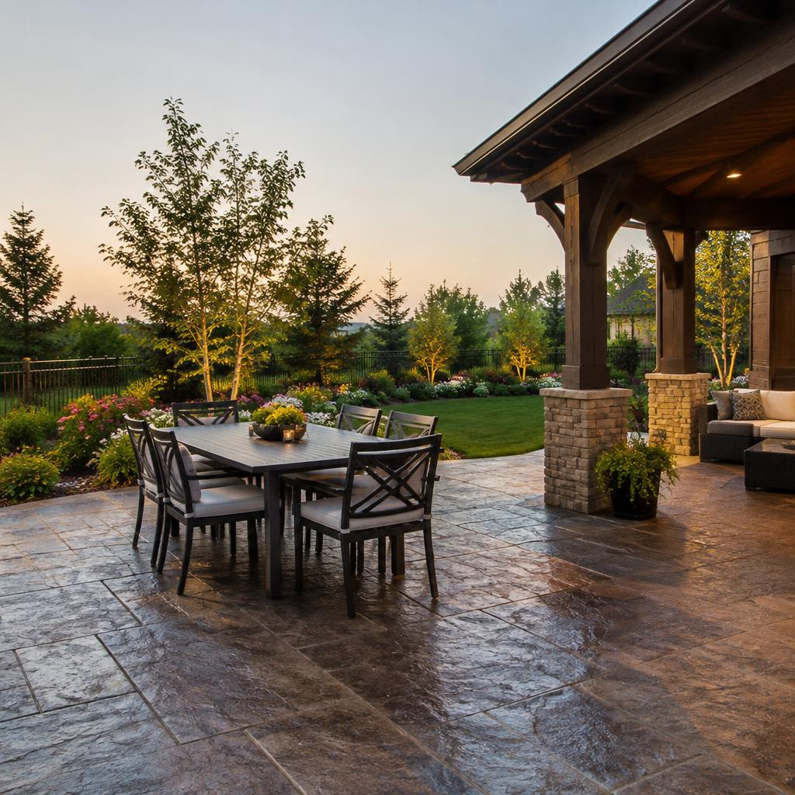
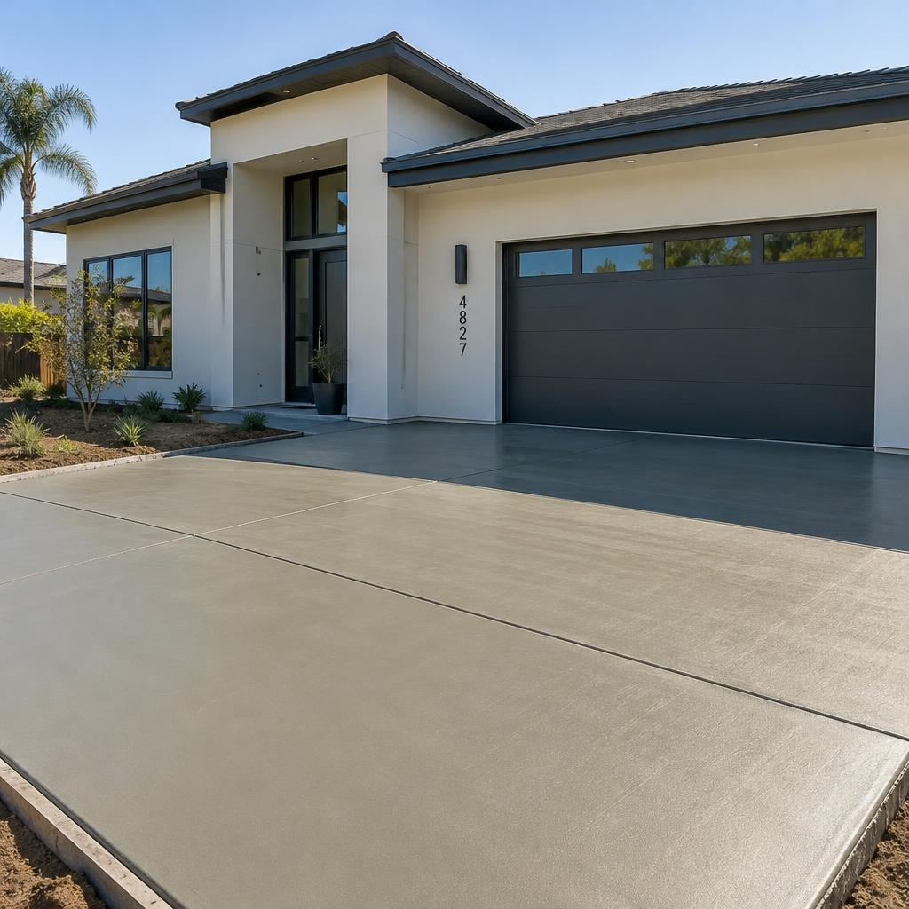
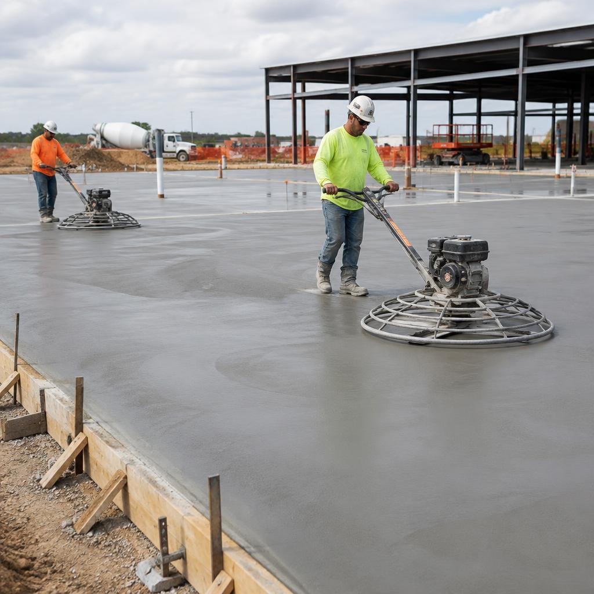

Fault-line movement
Shifting soil and seismic stress crack poorly prepared slabs. We use proper base depth, reinforcement, and control joints built for ground that doesn’t stay still.

Bay Area Concrete Contractor
Driveways, decorative patios, foundations and commercial flatwork — crafted with premium materials and finished by experienced crews.
Why homeowners choose us

About Bay Concrete
Bay Concrete is a locally owned concrete contractor serving homeowners, builders and businesses across the Bay Area. From a single driveway to a full commercial site, we bring careful prep, quality materials and a craftsman's eye to every pour.
Bay Area Problem Solving
Living on a fault line means soil shifts, slabs settle, and water finds its way under concrete. We design every pour for the ground conditions that come with Bay Area living.
Shifting soil and seismic stress crack poorly prepared slabs. We use proper base depth, reinforcement, and control joints built for ground that doesn’t stay still.
Soft fill and unstable soils lead to heaving and uneven surfaces. Careful excavation, compaction, and engineered base prep keep your concrete stable for the long haul.
Settling driveways, patios, and foundations often start with weak base or voids underneath. We diagnose the cause and pour so the slab stays level and supported.
Poor drainage softens the base and undermines concrete from below. We grade for runoff, manage moisture, and finish surfaces that shed water instead of trapping it.
Seeing cracks, settling, or pooling water? We’ll assess the site and recommend the right fix.
Book a free site visitOur Services
Complete concrete solutions for residential and commercial properties — designed, poured and finished in-house.

Broom-finish, exposed aggregate and decorative driveways with proper base prep and control joints.
Stone, slate and wood-plank patterns with integral color and sealing for a lasting finish.

Warehouse floors, parking lots, ADA ramps and sidewalks delivered on schedule.
Slip-resistant, cool-touch surfaces designed for outdoor living and entertaining.
Engineered footings, slabs and garage pads poured to spec and inspected.
Crack repair, leveling, overlays and sealing that bring tired concrete back to life.
How it works
We visit your site, listen to your goals and take measurements.
Clear written estimate with finish, color and timeline options.
Excavation, compacted base, forms, rebar and a precise pour.
Expert finishing, curing and sealing, then a final walkthrough.
Featured Projects
Testimonials
★★★★★
“Our new driveway looks incredible. The crew was on time, professional and left everything spotless.”
★★★★★
“The stamped patio completely transformed our backyard. We get compliments from every guest.”
★★★★★
“Bay Concrete poured 20,000 sq ft of warehouse slab for us ahead of schedule. Highly recommended.”
★★★★★
“Honest pricing and great communication from quote to final walkthrough. Would hire again.”
FAQ
Can't find your answer? Reach out and we'll be happy to help.
Most residential driveways are formed and poured in 2–3 days, and are ready for cars in about 7 days.
Yes. Every estimate is free, written and comes with no obligation.
Absolutely. With proper sealing every 2–3 years, stamped concrete lasts for decades.
Yes, Bay Concrete is fully licensed and insured for residential and commercial work.
Free Estimate
Book an appointment by service, or call us for a quick consult. We handle Bay Area fault-line movement, settling slabs, and drainage issues every week.